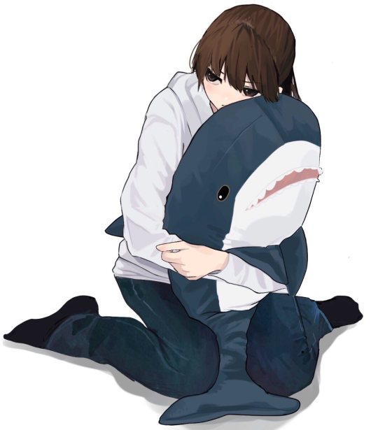

hii friends im denise, they/them 18 y/o uwu
find me on all the socials
Twitter- Discord: denise#9493
- Github
- Soundcloud
- 3644859.xyz
Yes, website elitists, I know that you're not supposed to have your CSS in your head tag, etc etc
Oui, j'ai du CSS dans ma balise head, et alors ?
hii friends im denise, they/them 18 y/o uwu
find me on all the socials
latest thoughts
morning
do be kinda rough to wake up at 5 am and get home at 8 pm every day. anyway i kinda wanna make a webradio thing w funny segments i think that could be cool!
new website, new face
hii! i'll be honest, i used to have a website ages ago, but it did not look like this and it definitely wasn't this "low effort". i havent had a website for ages and ive gone through so much since the time that i did have a website. you know that im mentally healing because i have my own website again hehe
